時間 | 2021/04 - 2021/06
角色 | UX Designer、前端與後端開發
方法 | 競品分析、Cores and Paths、Lo-Fi Prototype、Wireframe、Mockup
#METOO運動是指2017年開始在網路廣傳的hashtag標籤，通常用於譴責性侵及性騷擾行為。通過這個標籤，有數百萬名網友開始分享自身經驗，其中不乏像Lady Gaga這樣的知名人士。 #METOO運動對於大眾來說已不是一個新鮮的運動，但台灣民眾對於#METOO具體所代表的意義和事件大多不清楚。綜觀網路上的#METOO運動發展介紹，多冗長有缺失且多為英文，中文母語使用者無法完整並快速瀏覽整個事件發展。有鑒於台灣近期對於性騷擾的討論度增高，本土相關展覽、新聞越來越多，我們希望通過匯總國內外介紹網站的資料，結合近期的時事新聞，幫助民眾了解該運動及其背後代表的性別平權意義，期望掀起一次屬於台灣的#METOO運動。
摘要
設計流程
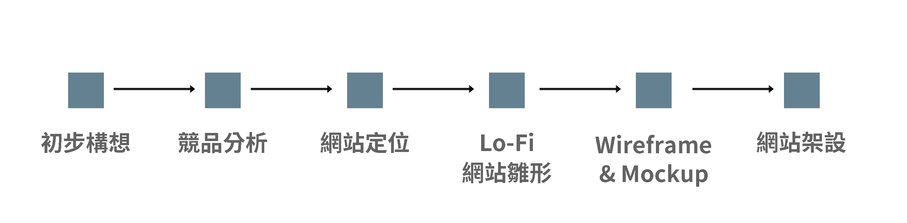
初步構想
預定使用者
對#METOO運動不了解但對相關性騷擾議題有興趣的閱聽人、瀏覽到許多性騷擾相關新聞 ，想明白世界性別平權運動在做什麼的民眾。這些網站使用者可以通過網站快速瀏覽#METOO運動的事件發生起因及相關的新聞、議題，或對於此議題有想法、故事，希望與重視該議題的民眾討論的議題交流者。
功能發想
- 可跳轉頁面、超連結，以供閱聽人進一步了解更多詳盡內容或相關受害者經驗分享。
- 以供留言的區域，歡迎網友匿名留下對於議題的意見或自身的故事。
- 介紹內容區，以起源、相關新聞報導組成時間軸，以供快速閱覽，使閱聽人較好梳理。
- 台灣對於此議題的態度、近期性騷擾的話題從何而起、可供參考的相關展覽等。
競品分析
 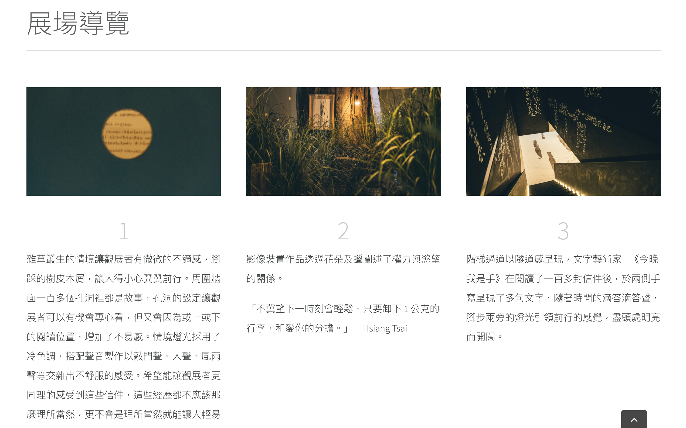
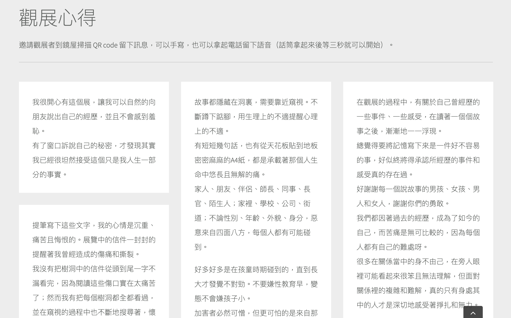
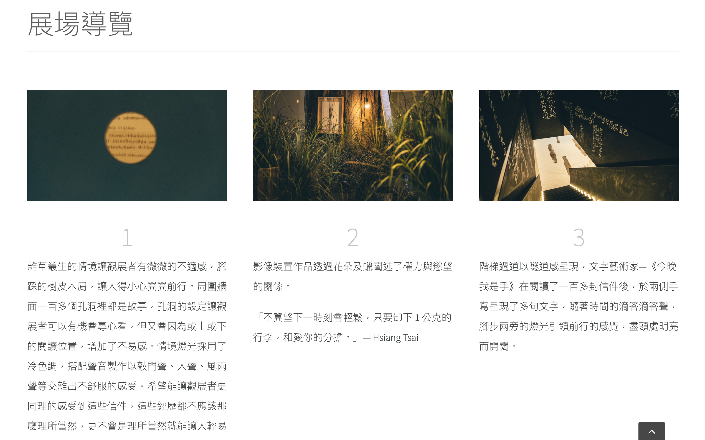
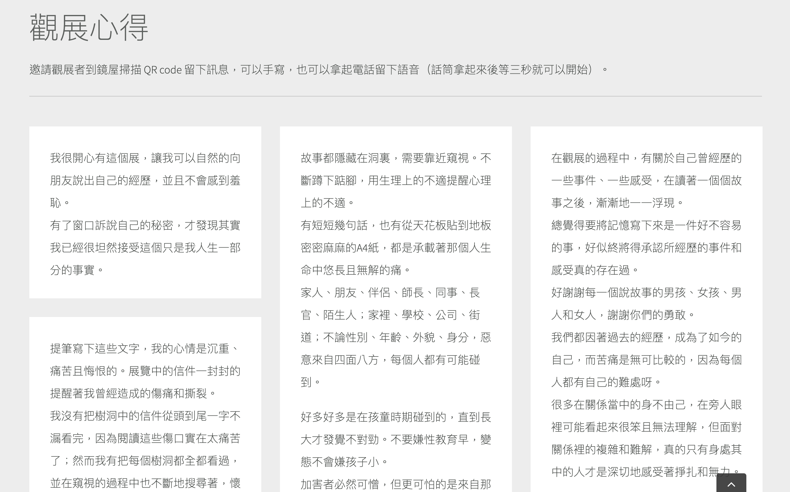
目前台灣沒有針以#METOO運動為主題的網站，我們參考的是性騷、性侵真人故事信件展覽的網站38號樹洞。
網站整體架構類似於實體展覽的紀錄，大多著重在描述展場的導覽與相關活動，其中可借鏡的是匿名留言的觀展心得，可以看到社會中性侵、性騷擾的實際案例與其帶給大眾的影響。
網站整體架構類似於實體展覽的紀錄，大多著重在描述展場的導覽與相關活動，其中可借鏡的是匿名留言的觀展心得，可以看到社會中性侵、性騷擾的實際案例與其帶給大眾的影響。
Cores and Paths
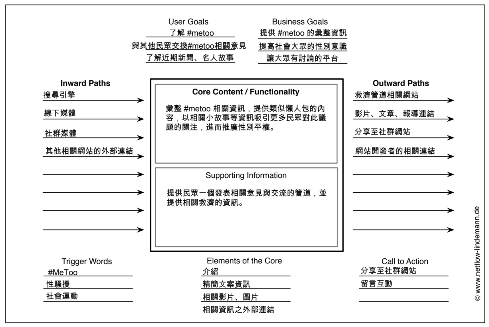
我們以Cores and Paths的方法整理出網站的定位。網站主要提供#METOO資訊的彙整，以懶人包的形式主打快速且有趣的了解相關資訊；次要功能則是提供民眾一個發表與交流的空間。
Lo-Fi Prototype
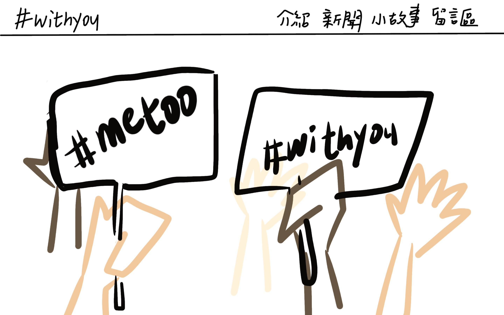
首頁的部分我們以拿著告示標語的立牌為視覺重點，意味著我們支持且宣導#METOO運動的網站理念，#Metoo #Withyou。
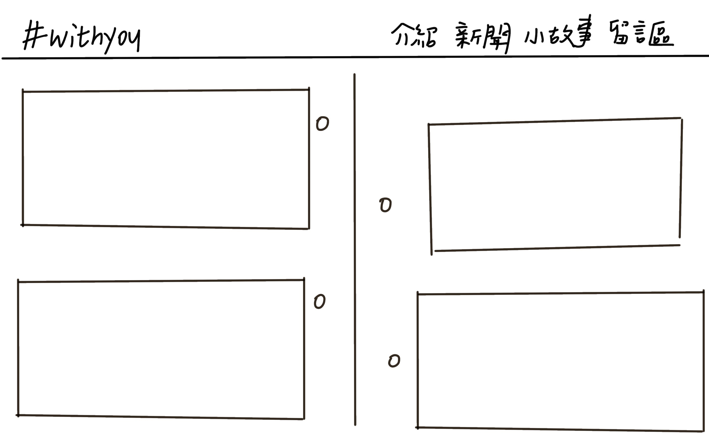
介紹的部分我們以時間軸的方式呈現，圖文搭配，達成讓人快速了解資訊的效果，在內容編輯上我們打算以國際發展為主、台灣的情況為輔進行描述。
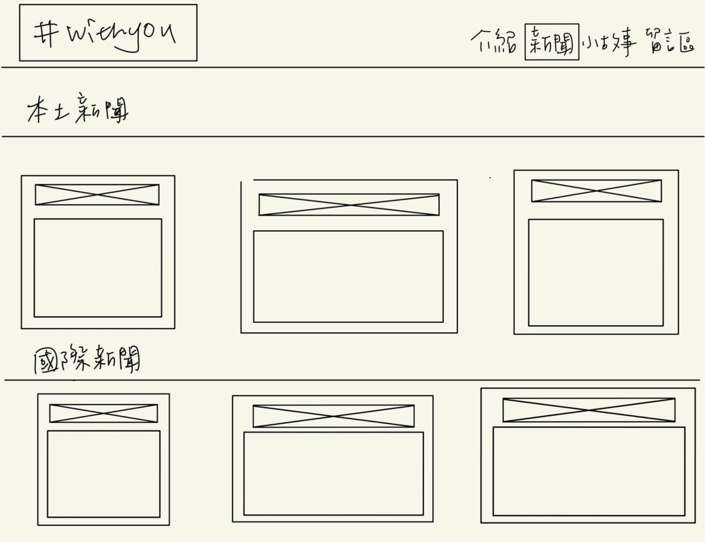
新聞分別呈現國際新聞與國內新聞，呈現#METOO議題的最新資訊。
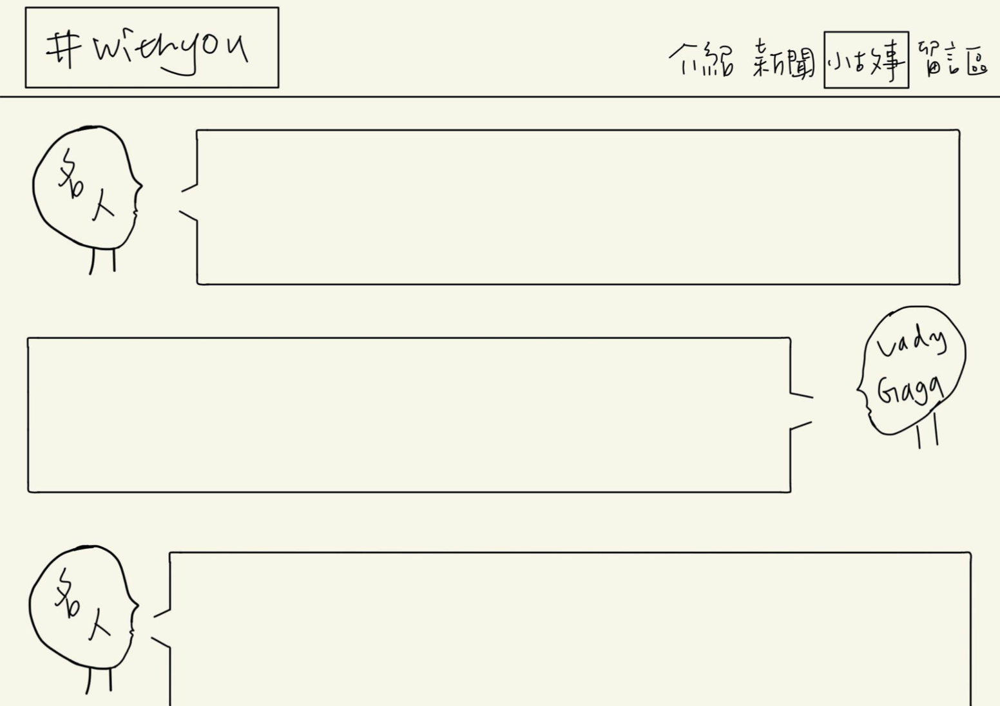
小故事則是搜集國內外名人公開表達自己是性騷擾受害者的發言、傳達對#METOO的支持。性侵、性騷擾事件並不是特定事件，一些大明星都有曾受其侵擾的經驗，能更加激起大家對性騷擾事件的重視，同時也向受害者傳達我們都在同一陣線上。
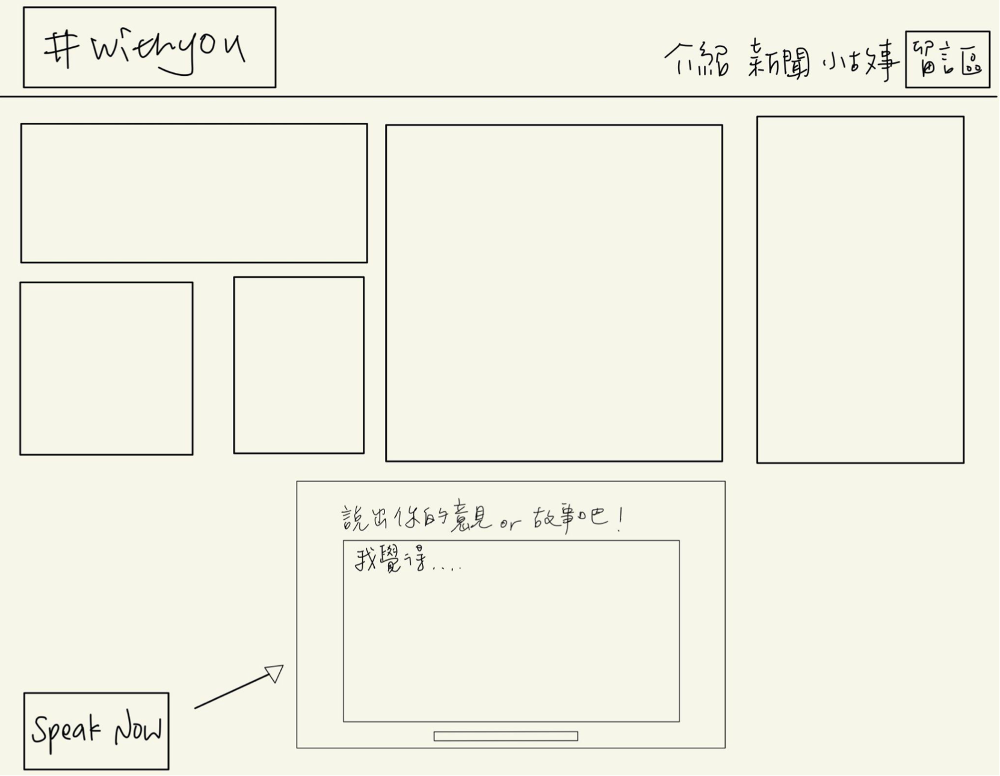
留言的部分則是參考了38號樹洞的設計，不管是想講述自己故事的受害者、對於議題有意見想要發表的一般民眾、抑或是看完網站有所感想的使用者都能有發表自己意見的空間。
Wireframe & Mockup

統整上述的功能與理念進行了wireframe和mockup的繪製，以粉色為主要用色、藍色則是用來重點強調的。
成果與反思
兩個月從發想到開發，四人團隊的我們順利完成了這項任務，並在網頁設計課程中獲得了最佳使用者經驗設計獎，也希望性騷擾等相關議題能更普遍的被了解。